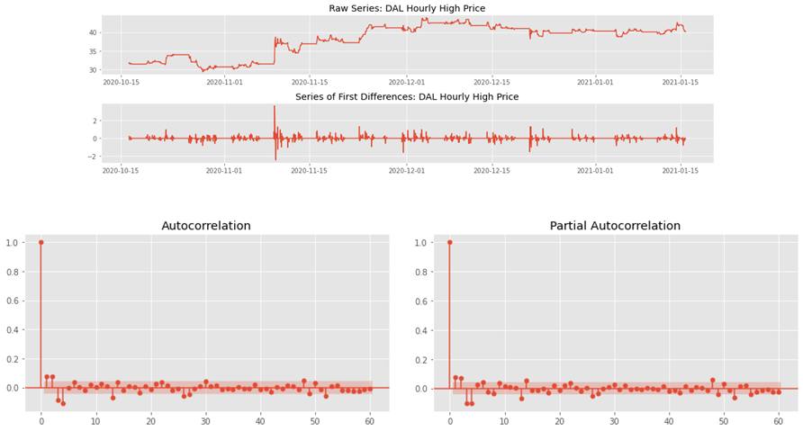
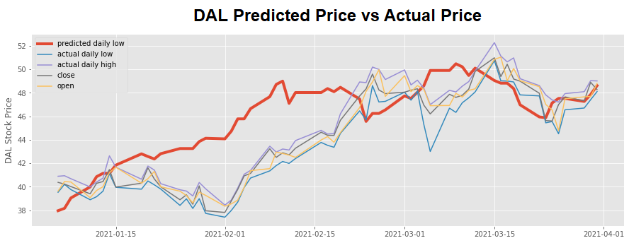

ARIMA is a forecasting model that utilizes time series based data to model the autocorrelations in the data. To improve the forecasting accuracy of an ARIMA model, the trend and seasonality in the time-series data is removed.
The stock prices for DAL were rescaled using a log transformation in order to reduce the skewness in the distribution. Additionally, a first difference of the transformed stock prices was taken to achieve a stationary time series. An autocorrelation and partial autocorrelation plot of the first differences was created to determine the model's parameters for Autoregressive (p), Integrated (d), and Moving Average (q).

The optimal ARIMA model still dramatically overpredicted the Daily Low each day which resulted in the trading strategy entering the market at far too high of price. The overall returns using ARIMA predictions resulted in a LOSS of over 300% during the 3 month trading window.
Key Learnings from this model:
The main reason for the poor performance of the ARIMA model, relative to the other models, is that it only used the daily DAL low and high price to predict the daily low and high price, respectively. With additional features, the predicted accuracy would most likely improve. In order to take advantage of the additional features in the dataset, a Vector Auto Regression (VAR) method would need to be applied.

{% endblock %}